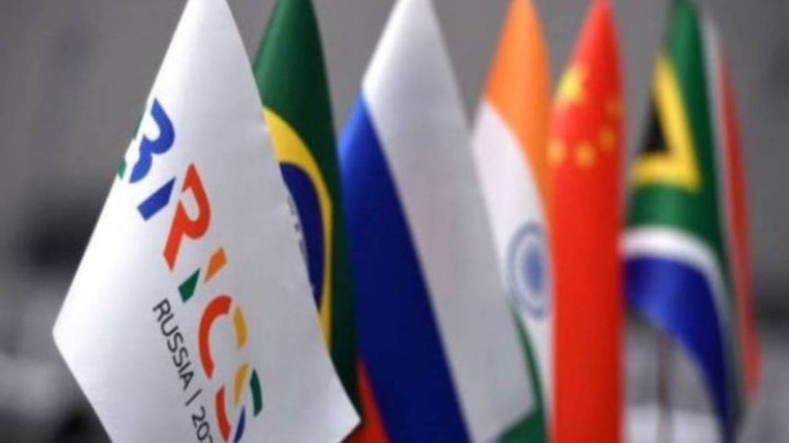

How BRICS was Formed and Why it is Yet to Achieve Its True Potential?
Image Credits https://tfiglobalnews.com/2023/06/08/how-was-brics-formed-and-why-is-it-yet-to-achieve-its-true-potential/

The idea of BRICS started as an investment concept proposed by Goldman Sachs analyst Jim O'Neill in 2001. He predicted that by 2050, the combined economies of Brazil, Russia, India, China, and South Africa would be larger than those of the current richest countries, such as the United States, Japan, Germany, the United Kingdom, France, and Italy. This concept caught the attention of the leaders of the five emerging economies, and they formed a group called BRIC in 2006.
BRIC became BRICS in 2010 when South Africa joined the group. The primary objective of BRICS was to create a platform for cooperation and coordination among its members to promote economic development, poverty reduction, and peaceful resolution of conflicts. Over the years, the BRICS countries have held annual summits to discuss common issues and challenges, including global governance, trade, investment, finance, energy, and sustainable development.
Why is BRICS Yet to Achieve Its True Potential?
Despite its initial promise, BRICS has been criticized for failing to live up to its potential. Here are some of the reasons why:
1. Internal Differences and Competing Interests
BRICS countries have diverse economic and political systems, which means they have different priorities, interests, and challenges. For instance, China has a state-led economy, while India has a market-based economy, and Russia relies heavily on its natural resources. These differences have led to disagreements among the members on issues such as trade, investment, and governance.
Furthermore, the BRICS countries have been competing with each other for influence in their regions and beyond. For example, China and India have had border disputes, Russia and China have been competing for energy resources, and Brazil and India have been vying for a permanent seat at the United Nations Security Council.
These internal differences and competing interests have made it challenging for BRICS to speak with one voice on global issues and to implement joint initiatives effectively. It has also weakened the group's cohesion and credibility.
2. External Challenges and Shifting Global Dynamics
BRICS countries face several external challenges that affect their economies and international relations. For example, they have been hit hard by the COVID-19 pandemic, which has resulted in severe disruptions to their supply chains, trade, investment, and tourism. They have also been affected by rising protectionism, geopolitical tensions, and environmental degradation.
Moreover, the global balance of power is shifting, and the world is becoming more multipolar. The United States, the European Union, and other advanced economies are facing challenges from emerging powers such as China and India. This changing landscape requires BRICS countries to adapt to new realities and to find common ground on how to shape global governance and promote sustainable development.
3. Lack of Institutionalization and Concrete Results
BRICS has been criticized for lacking institutionalization and concrete results. The group has relied mainly on annual summits and ministerial meetings to coordinate their policies and initiatives. However, these meetings have produced limited concrete results, and most of the decisions have been non-binding.
BRICS countries have established several institutions to promote economic and financial cooperation, such as the New Development Bank, the Contingent Reserve Arrangement, and the BRICS Business Council. However, these institutions have yet to achieve their full potential, and their impact on the international system is still limited.
Conclusion
In conclusion, BRICS was formed as a platform for cooperation and coordination among five emerging economies with the goal of promoting economic development, poverty reduction, and peaceful resolution of conflicts. However, the group has been criticized for failing to live up to its potential due to internal differences, external challenges, and lack of institutionalization and concrete results.
BRICS countries need to address these challenges and find common ground on how to promote sustainable development and global governance. They also need to strengthen their institutions, increase their cooperation, and work towards achieving tangible and impactful results that benefit not only their citizens but also the international community.
References
Category
- Economics
- International Relations
- Sustainability
- Political Science
Curated by Team Akash.Mittal.Blog
Share on Twitter Share on LinkedIn